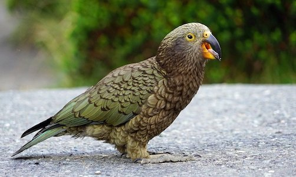
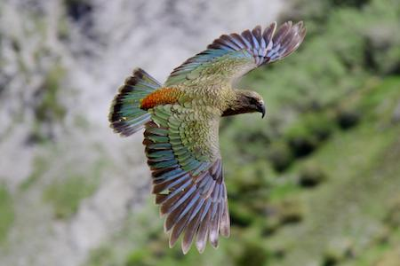

Wow! Based on your answers... You share similarities with the Kea (Nestor notabilis)

Keas are an extremely stunning and highly social species of bird. They exhibit complex social and cognitive behaviors throughout all stages of life. These birds are not known to "talk" like some parrots but they are very intelligent, considered to be as smart as a four year old child, they are able to solve logic puzzles and enjoy a good challenge. This intelligence and curiosity is also vital to their survival in harsh mountain environments, solving logical puzzels like pushing and pulling things in a certain way in order to get to food (sometimes working in groups). Like the Kea, you are an intelligent, resourceful and curious peroson who always enjoys a good challenge.
Click on Ceasar to Restart!